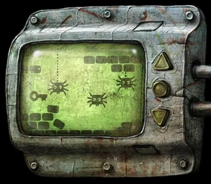
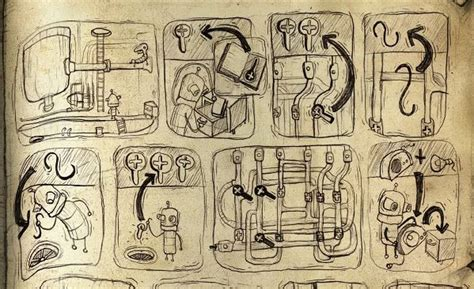
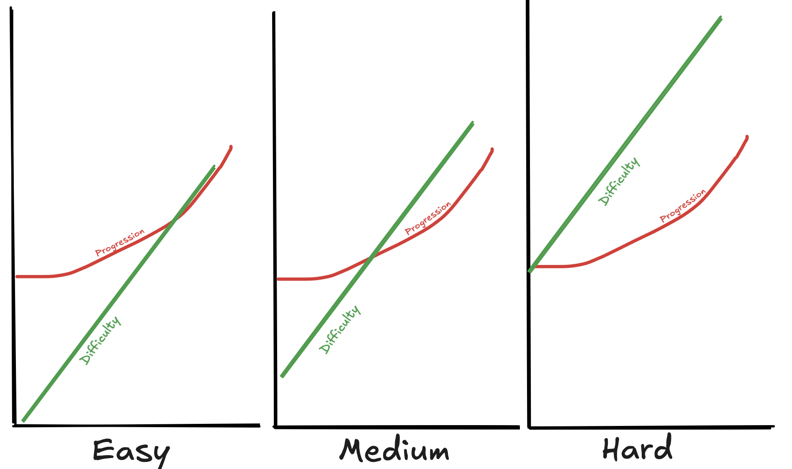
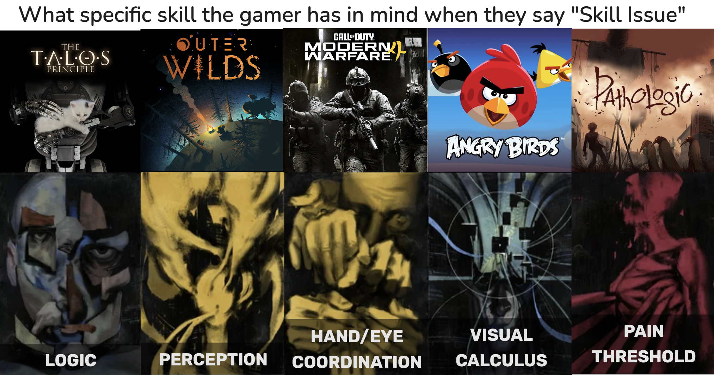
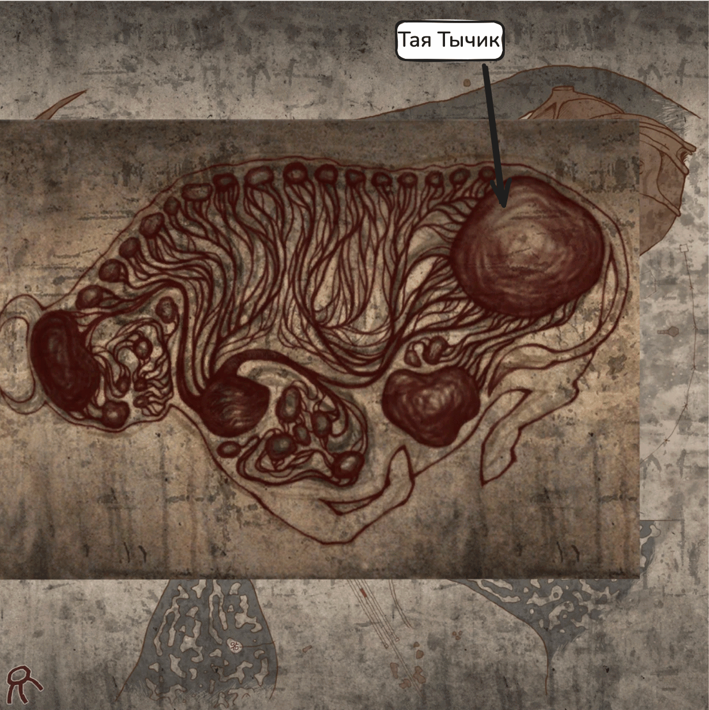

Pain as the Active Ingredient of Game Mechanics
That One Puzzle
A screenshot from Machinarium:

Machinarium isn't about keys and spiders; it's a point-and-click adventure about a robot. The screenshot shows a minigame you can play whenever you're stuck. It's incredibly tedious and slow; nobody would play it for fun. But if you beat it, you get to see a picture explaining the solution to the current level:

What an interesting mechanic!
I remember playing games back before home internet. Quite often, in adventure games like this, I'd get stuck on something minor and spend days going nowhere, trying every possible option because I had no idea where to click. Eventually I'd have to explain the situation to my mom, so she could look up a walkthrough on the internet at work and print out the page I needed. Often enough, I really was just being an idiot; but sometimes the solution was utterly absurd or arcane, and figuring it out was less a matter of logic or observation than of understanding the game designers' psychology. Either way, it was always just one annoying little thing blocking the entire rest of the game. Once I'd looked up the solution, I could finally get back to playing the game and figuring everything else out on my own.
Nowadays, of course, a walkthrough for any adventure game is three taps away on your phone; you don't have to ask your mom1. And when I play adventure games these days, I sometimes have a different, novel kind of reaction to reading a solution, that never happened before: "Damn, of course! I could've figured that out if I'd thought about it a little longer!"
Having to explain things to my mom and wait for her to bring the solution home was unpleasant and time-consuming. If I could spend another hour thinking about a puzzle, I'd much rather do that. I only used walkthroughs when I waas really, genuinely drawing a blank. Bashing my head against a game without making progress is pain; dragging my mom into it is also pain. I'd only decide to consult a walkthrough when the expected pain of banging my head against the problem exceeded the pain threshold of making a fuss.
This is a good answer to the problem of unsolvable puzzles blocking the entire game. In an ideal game, every puzzle is right at the edge of the player's skill: they have to put in some brain effort, but they will solve it eventually. In a real game, some puzzles will always be too hard, unless you make the entire game laughably easy. A real player might have a brain fart on something every playtester figured out; a solution that seems perfectly obvious to you might make zero sense to everyone else. You can count on that players will look up a hint when they get stuck – but then they'll also look it up when they could've solved the puzzle with a little more effort. That obviates the whole experience. Few people have the self-control to do it only when absolutely necessary. But if the player can get past any obstacle by accepting a little pain, they don't need that self-control. When they can progress, they progress; when they're stuck, they ask Mom. Machinarium puts Mom directly into the game: if you can't solve a puzzle by your own strength, you can always beat a tedious minigame instead.
A Fine Line
Ideally, a challenge should be right at the edge of the player's abilities – doable, but not trivial. In games with RPG-like progression, one problem that keeps coming up, and never really gets solved, is making sure the character's progression keeps pace with the game's increasing difficulty. If those two lines on the graph drift too far apart, the game breaks down one way or another. When I played Legend of Legaia, I gave up at a boss that was numerically impossible for my party to beat at that point, no matter what I did. I went off to grind some levels, but quickly lost interest. Conversely, Baldur's Gate III was less and less of a challenge for me as it went on. Even on the highest difficulty setting, it was only challenging in the first half. The entire third act was trivially easy because my party was obscenely overleveled. A lot of mechanics became pointless: there was simply no need for tactical options, situational spells, or rare consumables, because spamming the same attacks was enough to win any fight.
But I'd dug that hole for myself – in the first two acts I tried to complete every quest, find every secret, and equip all the best gear. Someone less obsessive or less attentive could be underleveled by that point and have a harder time. That's one problem about progression balance: different players invest different amounts of effort into progressing. If the character's power at any given point varies wildly depending on that investment, then sooner or later the game becomes either trivial or impossible. And if it doesn’t vary that much, what's the point of investing in progression at all? Why do side quests or hunt down the best gear?
Another problem is the difference in player skill. One player may be clever and nimble enough to win a fight even when underleveled; another might be bad enough to struggle even with a numerical advantage. Different difficulty settings help somewhat, but if the curves fundamentally diverge, a global difficulty setting can only change which way they diverge. If I'd played Baldur's Gate III on a (hypothetical) difficulty high enough to make Act 3 challenging for my party, I wouldn't have been able to get through Act 1. In Legend of Legaia, if I'd played on a (hypothetical) difficulty low enough to beat that boss, I'd have steamrolled everything that came before without the slightest effort.

In the most degenerate cases, you end up having to change the difficulty midgame. In Skyrim, I inevitably reach a point where generic dungeon fodder goes down easily, but the final draugr boss loses 0.03% of its health to a stealth bow headshot and one-shots me. At that point the game turns into a farce where I have to pick a different difficulty setting for every encounter. They can't even use the excuse of "it's an open world, we can't know what order the player will…" here, because the difficulty curve is broken within a single linear dungeon.
(another bad solution from the same series is having all the enemies level up along with you. When advanced guides for Oblivion recommend never sleeping so you never level up, something obviously isn't working. I won't say any more about it; people had already beaten three herds of dead horses into red mist about how automatic level scaling is bad)
A universal solution to the problem of the difficulty curve versus character progression remains to be discovered. Every game has to find its own way to somehow sit on all these chairs at once:
- combat difficulty stays neither too high nor too low throughout the game
- character progression actually makes a significant difference to combat difficulty
- this works both for the player who completed all the optional content and for the one who skipped it
- (bonus round for open-world RPGs) this works no matter what order the player explores the open world in
How important is it, really, for the player to be sufficiently leveled up? In Legend of Legaia, as in most JRPGs, it's critically important – if you're underleveled, winning the next fight might simply be mathematically impossible, and you'll have to grind some more. But Dark Souls, for example, can theoretically be beaten without leveling up at all, if you try hard enough. Being underleveled just means it'll take more attempts before you crack the boss
These examples highlight the asymmetry between being overleveled and being underleveled. If you're overleveled, the rest of the game loses its value as a challenge, and there's not much you can do about it. But if you're underleveled, you can always try harder. Grind until you're strong enough, and keep trying the fight again and again. It'll take time and effort, but if you really want to, sooner or later you'll get there.
An observant reader will notice a parallel with the Machinarium example. If the next challenge is too hard, the player can always get past it by investing a little pain. Mindlessly grinding XP or doing corpse runs along the same route over and over is boring and tedious. But it makes your character stronger; do it enough times and you can overcome a challenge you as a player aren't strong enough for. Nobody likes grinding, but it's kind of a solution to the difficulty-curve problem. Thanks to this, overestimating the player's or character's strength while balancing the game isn't such a big deal. If the player isn't strong enough, they can always make up the difference with pain.
Theater of Cruelty
One meniality game designers sometimes have to deal with is the resource economy math. "Resources" can literally be 


 , but they can also be ammo, health, time, hunger… If it's a number that can be funged with other numbers, it's a resource, and it belongs in an Excel spreadsheet to be crunched. How much health does one extra shotgun shell save you in combat, on average? "Source" and "sink" are what they call the nodes where resources enter and leave the system. A mine produces gold, which you spend on a healing potion, which restores health, which a goblin stabs away – the mine is a source, and the goblin is a sink.
, but they can also be ammo, health, time, hunger… If it's a number that can be funged with other numbers, it's a resource, and it belongs in an Excel spreadsheet to be crunched. How much health does one extra shotgun shell save you in combat, on average? "Source" and "sink" are what they call the nodes where resources enter and leave the system. A mine produces gold, which you spend on a healing potion, which restores health, which a goblin stabs away – the mine is a source, and the goblin is a sink.
Resources from grinding are usually modeled as a source. You kill a bunch of slimes and get XP/gold/slime balls; you didn't have to exchange any other resource for them, they appeared "out of nowhere." Some F2P mobile games count the time a player spends as a resource – so you can buy your way out of spending it, of course. But if that's not what we're doing, if we're looking at games as works of art, why not count pain as a resource instead?
The central idea of this post was indirectly inspired by a rant I once heard from Nikolay Dybowski. I thought about it because I recently replayed his game, "Pathologic". It mastered the art of using player pain as a tool. The game is usually described as extremely difficult, but by the conventional understanding of game difficulty, it really isn't. At first, while you don't understand how things work, you might get confused, but once you have even a rough grasp of the local economy, it's not hard to get all the money, food, and medicine you can eat. There's enough time to do all you need to do, too; on some days you can finish all the daily quests before sunrise2. And yet it still feels difficult on a spiritual level, and not just because of its frankly sadistic narrative.
On Day 6 of the Haruspex's story, the main quest requires you to bring Taya Tycheek 50 alpha-tablets. This isn't mechanically hard. The tablets are cheap, and by this point you should have more than enough money. All you have to do is visit every pharmacy in town and buy them. But good God, is it infuriating! The tablets are useless to the Haruspex (they're the weakest immunity boosters in the game, and he can brew much more effective twyrine tinctures for cheap), so you've probably been selling every tablet you've found up to this point – only to learn now that you shouldn have held onto them. Each pharmacy stocks only a few of them; you have to spend time trudging all over the place, then all the way back to the bumfuck part of the town3. And she doesn't even need the damn things! It's just a baby tantrum. She has no idea what the tablets do, she clearly pulled the number out of her ass, and we're doing this pointless, merciless fetch quest only because the entire Kin likes kissing her butt.
Or you can simply not do it. Each day, if you fail to complete the main quest, your Bound do it for you, and one of them catches the plague as a result. On the final day, the town is saved if they're all healthy. So if you've got a spare panacea or "shmowder" lying around, you can spend the whole day doing something more interesting, and then just cure whoever got infected. These medicines are extremely rare, and you might need some of them for yourself. But each one is basically a lifeline, the option to fail one daily quest and still beat the game.
(a note for completeness’ sake. The other two healers progress through their storylines in parallel with the player, and their Bound can also get sick, this time randomly and outside your control. If you cure the other healers' Bound as well as your own, you get to see some bonus scenes. I'm going to ignore that part from here on. As far as the resource model is concerned, those are three difficulty levels – are you trying to keep one, two, or three sets of Bound healthy?)
So we have a resource: "shmowders"4. The player can find a "shmowder" at certain points in the story, get one as a rare drop from Teensies, or occasionally find one in a plague house. The player can use a "shmowder" to cure themselves or a Bound. If there aren't enough to cure all the Bound, the game is lost.
A significant part of the "shmowder" economy works like a normal survival game. Every success or failure to manage the game’s survival mechanics comes down to a ±1 to your "shmowder" counter. The more free time you have left, the more you can spend looking for "shmowders." The more trading fodder you have, the easier it is to buy a "shmowder" from a Teensy. The better you are at avoiding the plague, the less likely you'll be to have to eat a "shmowder" to survive. The more antibiotics and painkillers you can afford, the easier it is to survive an infection without spending a "shmowder." The better sleeping pills you can get your hands on, the less time you have to waste sleeping. The better you fight, the less health you lose in combat, and the less money you spend on bandages, leaving more money for medicine…
The difficulty of this whole survival layer isn't actually all that high. If that were all there was to it, "Pathologic" would never have earned its reputation as a difficult game. But the thing with the 50-tablet misery doesn't show up very well in the numbers. Sure, doing it costs you some resources from your "survival" stash, but it's not going to break the bank. One "shmowder" is worth far more than 50 tablets. The real difficulty is that the player has to experience a hit of pain. Or take a -1 on the "shmowder" counter.
The Taya situation is exemplary, but the game is full of other moments of pain. There are optional quests that require you to endure pain in exchange for valuable rewards. There are infected houses with useful loot inside, but they are terrifying to explore. Rummaging through every trash can for bottles is dull and tedious, but you can trade those bottles for bandages. And there are plenty of moments when you realize you said the wrong thing in a dialogue two hours ago, leaving you with an interesting choice: reload and replay the whole stretch, or take the hit to your "shmowder" counter.
For a hypothetical player with an unlimited pain tolerance, the game is very easy – it's like having an unlimited budget for microtransactions. If emotional damage doesn't scare you5, you can use it as an endless source and breeze through the game without a sweat. But most people aren't like that. Most people aren't willing to repeatedly press a button "you get 999 in-game currency, but I crush your balls with a sledgehammer."

Painkiller
Just as pain can be a source, it can also be a sink. The flip side of enduring pain to get resources is spending resources to reduce pain.
In its crudest form, this exists as "quality-of-life" features. In Skyrim, you can buy crafting stations for your home so you don't have to walk over to the marketplace and use someone else's; there’s no mechanical advantage to it, it just cuts down on routine.
To generalize, looking through the lens of pain, a lot of games work like this. I remember blood bags in Vampire: The Masquerade – Bloodlines. I was perfectly capable of getting through all the minor combat encounters without them; there was no real risk of dying. It was just tedious and time-consuming. But if I was willing to spend some blood packs, I could get through those fights much faster and easier by blasting everyone with blood magic. And I didn't even have to worry about dodging – I'd just heal up with blood. Many RPGs work like this! Consumables are designed to let you get through encounters you otherwise couldn’t beat; having access to them raises the character's overall power level. From the video essays about game balance that I've come across, I got the impression that this is how many designers think about consumables: typically, the question is how much the player will spend per encounter, and how much that adds to the progression curve. But you can also see consumables as "painkillers." The more resources the player can obtain, and the fewer resources they need to beat the game, the less pain they have to endure to get the same results. Drink a healing potion instead of waiting for passive regeneration. Buy transportation instead of walking. Buy crafting ingredients instead of gathering them out in the wild. All of these are ways of spending in-game resources to endure less pain.
Game economies often have nigh-bottomless sinks for the players to dump all their excess resources. In Hades, once you've beaten the game, unlocked everything, and run out of things to spend run rewards on, the Resource Director shows up, selling fancy badges for increasingly crazy amounts of money. The badges don't do anything. They're just pictures that say "I spent a lot of money on a badge." The point of this is that resources still have to mean something. Diamonds are a reward for completing bounties, but once you've bought everything there is to buy with diamonds, they stop being a reward, and there isn't much of a reason to do bounties anymore. Even a purely symbolic reward is (in theory) better than no reward at all; when you see that a difficult boss fight brought you one step closer to buying a badge, that gives you a necessary hit of dopamine and a sense of purpose and progress.
In Baldur's Gate III Act 3, I was missing a sink. Early on, whenever I gained XP, found treasure, or got unique gear, it meant something: I knew it made me stronger. By the end, rewards and treasures meant nothing; everything was trivially easy already. I was bored, and I had to apply willpower to finish the game. The final act involved all sorts of pain – frustration, boredom, that peculiar kind of brain fog you get from information overload without any accompanying dopamine hits. I had no way to avoid the pain, and I got nothing in return for it.
Could the designers make those problems cancel each other out? Could there have been a way to sink resources into avoiding pain, both reducing the suffering and slowing down my progression? I’m not sure if that would work within the D&D5 ruleset with its notoriously inflexible character development. Maybe they could give less XP for optional content, offer more consumables as rewards, and make the consumables more convenient to use so players don't hoard them? That would make fights hard to get through without spending resources, but they could potentially make them arbitrarily easy if you spend them… possibly. It's hard to give a concrete solution without crunching the actual numbers of the actual game. But surely the resource calculations would be made easier if you add pain as an explicit source and an explicit sink – that gives you two whole new degrees of freedom to fiddle with.
As seen in the mirror tower
Looking through the lens of pain, we can reframe the progression curve problem.
A game brings challenges, the player overcomes them, and that brings catharsis. For the game to be fun, you need both halves of the cycle. If the challenge is too hard, you get pain without relief. If I bash my head against the boss for the twentieth time without progress, it's just pain. I will only get my catharsis if I actually beat it. But if the challenge is too easy, I don't experience any pain to begin with, so winning means nothing to me. I'm bored, the dopamine isn't hitting.
For my achievements to mean something, they have to relieve some kind of pain. If I level up or find a powerful piece of gear, it matters to me only because it makes some future challenge less painful. But that creates a new kind of problem – if this makes the challenges not painful at all, that breaks the cycle.
That's exactly what happened in Baldur's Gate III Act 3. The pain sink wasn't deep enough, and by the midgame I'd filled it to the brim. There was nowhere left to dump my pain. I was suffering pain, and nothing I did could remedy it. In Legend of Legaia, the opposite problem happened – the source ran out too soon. I could grind a few more levels to make that boss beatable, but I ran out of steam first.
That makes us see "difficulty" as a different kind of problem! When we say "the player is overleveled and that makes the game too easy," we're implying that the problem is a lack of difficulty, but that's not how it works. I've played entire games that were easier for me than the third act of Baldur's Gate III, and I wasn't bored. What matters is the first derivative of difficulty. My actions should actually reduce difficulty. When I come up with a new tactic, it should actually let me beat the fight with less pain. When I focus on learning how to dodge, it should really let me beat the boss at least one attempt sooner. When I level up, it should actually make the rest of the game easier for me. At least a speck of pain should drain into the sink. That's what gives meaning to coming up with tactics, improving your skills, and gaining levels. The game breaks down when the sink fills up and the "pain/relief" cycle stops working.
When I look at resource economies through this lens, I see that pain is the only real source and the only real sink. A game is a closed system in itself; everything happening inside the computer is just exchanging one resource for another. The only bridge between that system and the outside world is the user, and all the user can do is suffer or relieve pain6. Slimes that respawn infinitely and therefore act as an infinite source of loot aren't really the source; for them to produce loot, the player has to invest pain into farming them. They exchange pain for loot. Somewhere down the line, that loot has to somehow relieve the pain, otherwise there's no point farming it. So if the catharsis isn't happening, track where the pain goes. Is the sink filling up? Is the source drying up? Or maybe there’s a bottleneck in the middle that got clogged with pain. Just like a Carnot engine produces energy by pumping heat, a game produces catharsis by pumping pain.
though she might appreciate it—when was the last time you talked to your mom?
NB: this is true of the first game, aka Pathologic Classic. The sequels are different
No, seriously.

we're counting panaceas as "shmowders"; for this model, there's no difference between them
or if you've played before and are already desensitized
"Or money!" say the designers of F2P games. We exclude them from consideration by fiat
 Reply by email
Reply by email Leave anonymous comment
Leave anonymous comment